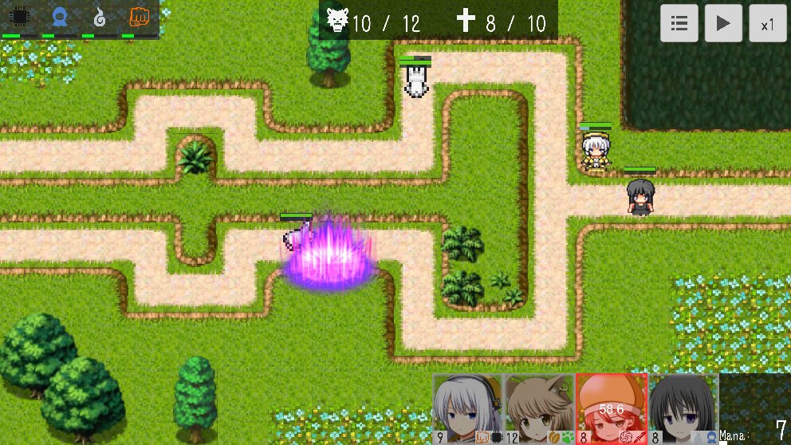
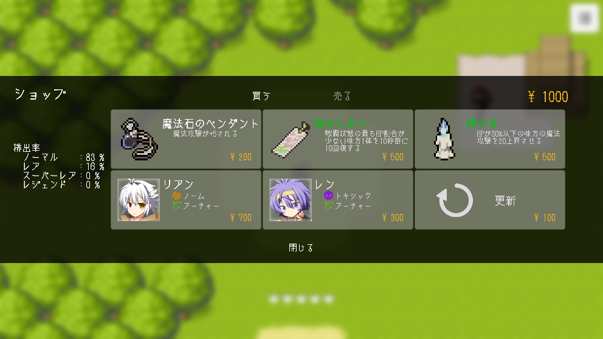
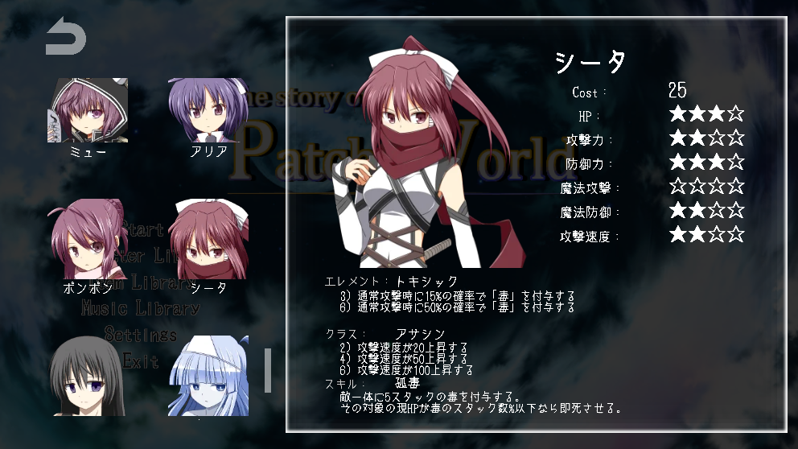

|  |  |  |
|---|
概要
タワーディフェンス ＋ ローグライク
このゲームはタワーディフェンスとローグライクを融合させたゲームとなっています。
タワーディフェンスとは敵の進軍をタワー(キャラクター等)を配置し守るゲームであり、 ローグライクは、プレイするたびにマップやダンジョンが変わるゲームを指します。このゲームのローグライクは特にデッキ構築型のローグライクとなっています。
そのため、このゲームをまとめると「味方・敵・アイテム・目的のルート等がランダムで、その中で好みの部隊を集めて遊ぶタワーディフェンス」です！
タワーディフェンスとは敵の進軍をタワー(キャラクター等)を配置し守るゲームであり、 ローグライクは、プレイするたびにマップやダンジョンが変わるゲームを指します。このゲームのローグライクは特にデッキ構築型のローグライクとなっています。
そのため、このゲームをまとめると「味方・敵・アイテム・目的のルート等がランダムで、その中で好みの部隊を集めて遊ぶタワーディフェンス」です！
ゲーム情報
- タイトル：The story of Patch World
- ジャンル：タワーディフェンス
- プレイ時間：1回10分～40分
- 動作OS：Windowsのみ
- ：(現在WebGL版を用意中です)
- 難易度：高め、何度も失敗して対策を学習する必要あり
- チュートリアル：無し
- ゲーム操作：マウスのみ
- セーブ要素：無し・キャラ解放・実績等も無し
- エンドルート：現在は1ルートのみ
- 価格：無料
クレジット
以下、敬称略
-
メイン制作
- ダージリン
-
画像
- 尾羽の小屋: http://obane.tuzikaze.com/index.html
- pochi
- ウロボロス
- 空彩: http://loo.sakura.ne.jp/index.html
- ぴぽや: https://pipoya.net/
- 白螺子屋: http://hi79.web.fc2.com/
- ゲーム制作者のための講座と素材とツールのサイト-藤宮翔流のひきだし-: http://game-hikidashi.com/woditorminence_effect/
- tktk(Material Forward): https://materialforwardvfx.wixsite.com/materialforward
- ゆうひな: https://blog.goo.ne.jp/akarise/e/87e30d48b5b93deb83e3ff824766d539
- ICOOON MONO: https://icooon-mono.com/
- 化け猫缶: http://neko.moo.jp/BS/
- BGM / SE
-
フォント
- Chiphead、雑念の塊: https://cute-freefont.flop.jp/sinecaption.html
注意事項と利用規約
- 本ゲームは無料です。
- 本ソフトの利用によるユーザの不利益については責任を負いかねます。
- 本ソフトで利用している素材の中には二次配布使用禁止のものも含まれるので、本ソフトから素材の抜き出しを行わないでください。
- このゲームは現在β版となっております。そのため、キャラクター・ステージ等の一部の実装が完了しておりません。随時実装を進めますので、暫くお待ちください。
ダウンロード
-
Ver1.0(2021/08/22)
The story of Patch World β版 公開! -
Ver1.1(2021/08/22)
リザルト画面の追加
ノームシナジーの不具合の修正
-
Ver1.2(2021/08/29)
新マップ「魔物の村」を追加
WebGL版の用意
ゲームのバランスの調整
-
Ver1.3(2021/09/09)
魔物の村での不具合を修正
アイテムを沢山持つとゲーム進行不可能になる不具合を修正
ゲームのバランスの調整
-
Ver1.4(2021/09/18)
キャラクター・アイテムを追加
-
Ver1.5(2021/10/01)
いくつかのキャラクター・シナジーの効果を修正
新ステージの追加
コスト順でソートできるように
コンタクト
感想・質問・要望・不具合報告はこちらからお願いいたします。